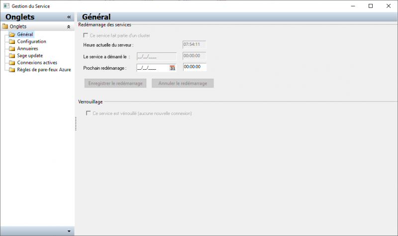
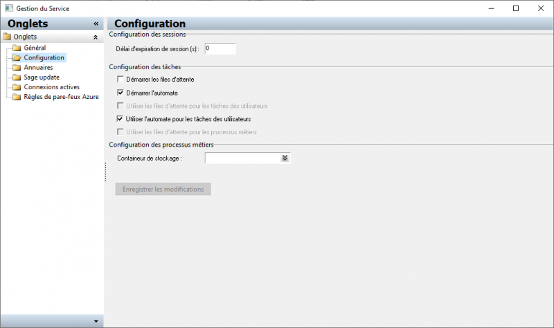
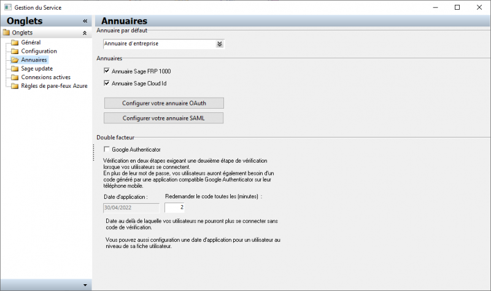
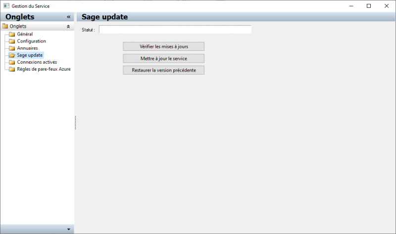
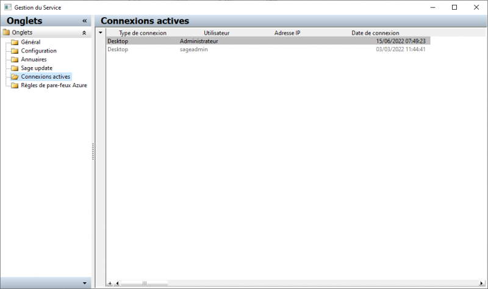
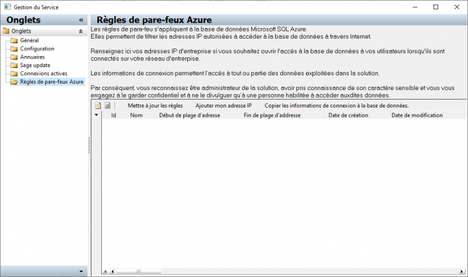

Gestion du service
L'administration Web expose une interface permettant de configurer et gérer certains paramètres du service.
Redémarrage
Cette page permet de planifier un redémarrage du service.

- Configurez le redémarrage du service

|
Tip : Le redémarrage du service est nécessaire pour prendre en compte les modifications de configuration
|
|
|
Tip : En cluster l'ensemble des services du cluster sont redémarrés
|
- Lorsque le service est verrouillé les utilisateurs ne peuvent pas se connecter
Configuration
Cette page permet de configurer certain paramètre du service en surchargeant les paramètres définis dans le fichier de configuration

- Configuration des sessions
- Il s'agit du délai d'expiration des sessions inactives.
- Il s'agit du paramétrage du dossier et des services de files d'attente et d'automate du service
- Utilisez les files d'attente pour les processus métiers
- Cochez cette case si vous utilisez les processus métiers gérés par les tâches.
|
|
Tip : Si vous ne cochez pas cette case la gestion des évènements métiers ne fonctionnera pas dans les processus gérés par les tâches mais fonctionnera dans l'ancien moteur de processus métiers. Il n'est pas possible d'utiliser les deux moteurs simultanément.
|
- Définissez le container de stockage utilisé pour stocker les documents manipulés par les instances de processus métiers
Annuaires
Cette page permet une configuration simplifiée des annuaires.

- Sélectionnez l'annuaire par défaut parmi les annuaires actifs
- Activez ou désactivez les annuaires Sage FRP 1000 (interne) et / ou Sage Cloud Id
- Paramétrez un annuaire externe, soit OAuth2 soit SAML
|
|
Tip : Vous aurez besoin d'information spécifiques à votre annuaire pour configurer l'annuaire externe
|
- Activez l'utilisation de l'authentification renforcée par le protocole Authenticator
|
|
Tip : L'authentification renforcée ne s'applique que pour l'annuaire interne, pour un annuaire externe c'est à celui-ci de gérer cette fonctionnalité
|
|
|
Tip : Il est conseillé d'activer cette fonctionnalité
|
Sage Update
Cette page permet de configurer la mise à jour du service par Sage Update

- Indique la version plus récente disponible sur Sage Update
- Vérifier les mises à jour
- Teste si une version plus récente est disponible.
- Télécharge la version plus récente. Cette version sera installée au prochain redémarrage du service.
- Restaurer la version précédente
- Télécharge la version précédente à la version en cours (N-1). Cette version sera installée au prochain redémarrage du service.
|
|
Tip : Cette fonctionnalité n'est active que si le service est démarrée par loader de service
|
|
|
Tip : Vous devez redémarrer le service après installation d'une mise à jour
|
|
|
Tip : En mode cluster l'ensemble des services du cluster auquel appartient le service seront mis à jour
|
Connexions actives
Cette page liste les connexions actives.

Règles de pare-feu Azure
Cette page permet de configurer le pare-feu de base de données de SQL Azure Database lorsque le service est hébergé sur Azure

- Copier les informations de bases de données
- Utilisez cette action pour copier les informations de connexion à la base de données dans le presse-papier. Ces informations sont cryptées et ne peuvent être décryptées que par un produit compagnion Sage tel que Sage Bi Reporting.

|
Attention : En configurant le pare-feu de base de données vous permettez l'accès aux bases de données à travers Internet.
|
|
|
Tip : Cette page n'est accessible que si le service est hébergé sur Azure
|
{kind=link}
{kind=link}
{kind=link}
{kind=link}
{kind=link}
{kind=link}